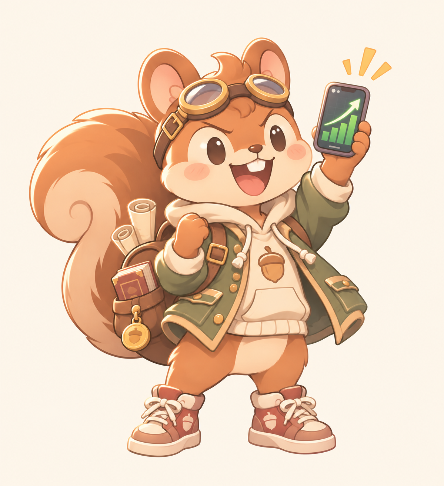
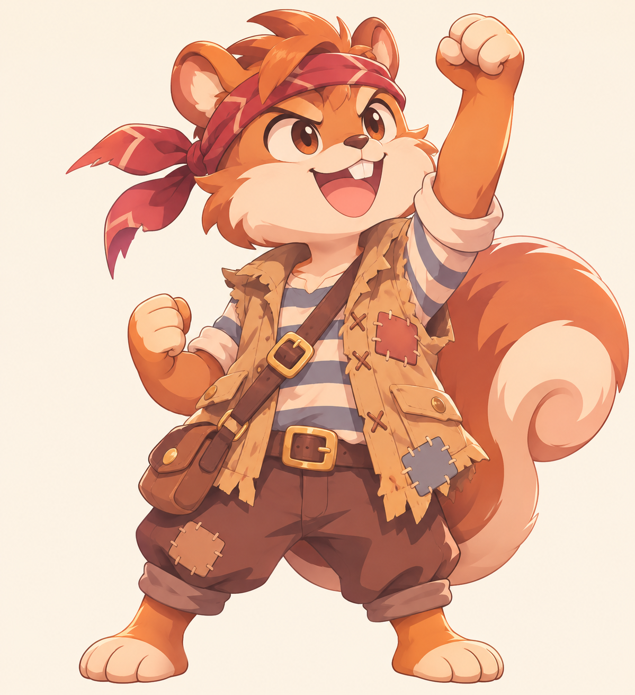
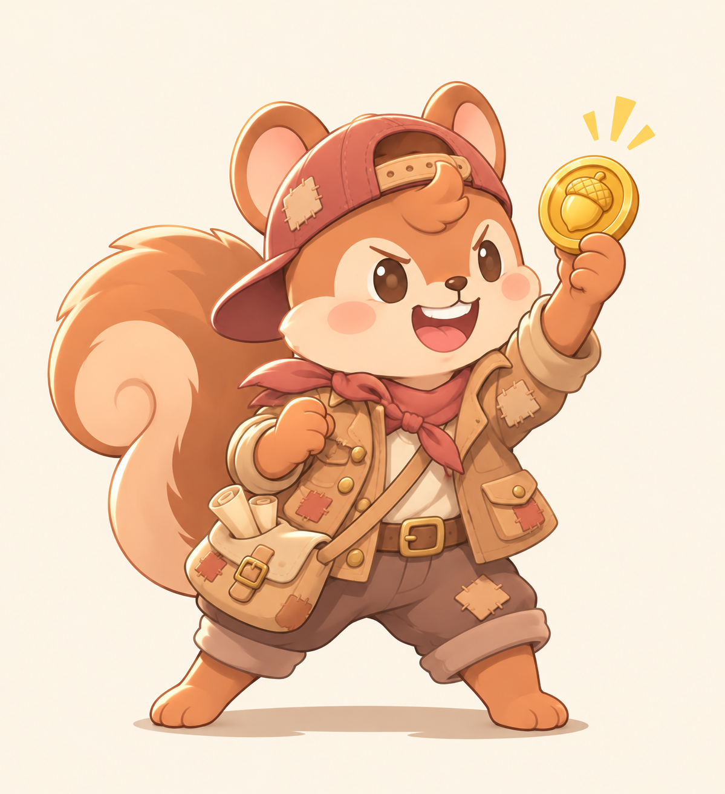
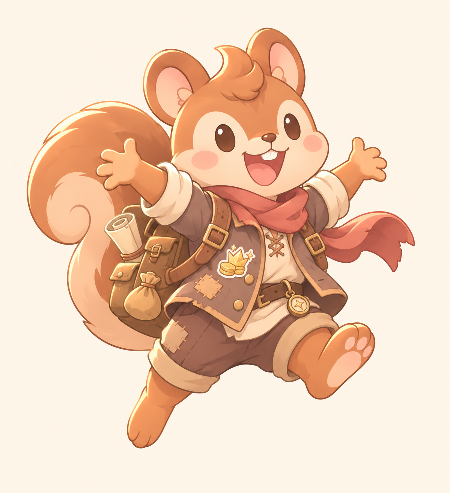

일확천금을 꿈꾸는 젊은이 시안
스타일 D로 뽑은 주인공 시안 4종입니다. 성격은 "빠르게 한 방을 노리는 젊은 도전자"로 맞췄습니다. 특정 기존 캐릭터를 따라 그린 것은 아닙니다.

차트가 오르는 화면을 든 흥분한 얼굴

한 방을 확신하는 자신만만한 포즈

도토리 동전을 쥐고 다음 한 방을 노리는 자세

뛰어오르는 역동적인 연출, 게임 연출용으로 좋음
고르실 때 볼 점: 덜 착해 보이는지, 젊고 들뜬 느낌이 나는지, 작은 화면에서도 누구인지 알아보는지.
하나 고르면 그 디자인을 주인공 기준으로 정하고 표정 5종을 다시 뽑겠습니다.